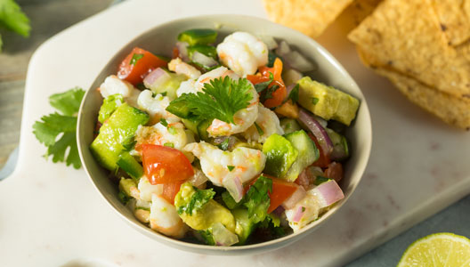
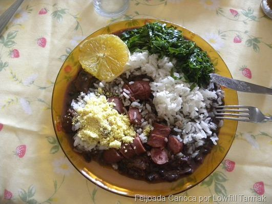
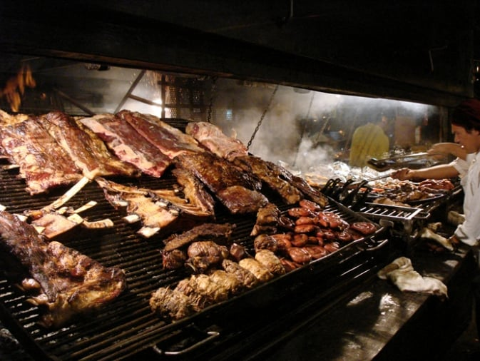

Machu Picchu
Conheça uma das principais comidas peruanas sugeridas por turistas:
-
Ceviche Peruano
O famoso ceviche é o prato peruano mais conhecido no mundo. Para quem vai até Machu Picchu, não pode deixar de degustá-lo. Ele é feito com peixe cru, cebolas, pimenta, milho roxo e outros ingredientes, tudo cozido no caldo de limão.
- 
Rio de Janeiro
Rio de Janeiro Internacionalmente conhecida como a Cidade Maravilhosa, por sua incrível beleza, as incomparáveis festas de Reveillon e do Carnaval
-
Feijoada Carioca
Parte da tradição culinária ibérica, a feijoada virou a receita brasileira por excelência. É o prato que nos dá identidade, aquele que apresentamos a todo estrangeiro de passagem. Mas a clássica combinação do feijão preto com carnes nasceu no Rio, e é mais consumida aqui. Tinha mesmo que terminar em samba, não é? Os cozidos de carnes e legumes são milenares, com registros que remetem ao Império Romano. Receitas próximas a da feijoada têm sido cultivadas pelas tradições culinárias de Espanha, Portugal e França; quem nunca devorou um bom cassoulet que atire a primeira pedra. É a partir dessa influência europeia que nasce a nossa feijoada. Seus primeiros registros — completa, com feijão preto gordo, arroz, couve e farofa — datam do século XIX, no Rio.
- 
Buenos Aires
Tradição de Buenos Aires
-
Parrilla em Buenos Aires
Muito popular na Argentina e no Uruguai, a parrilla, assim como um asado, também é como se fosse uma espécie de churrasco. Mas, nesse caso, ela é feita na grelha e na maior parte das vezes com cortes de carnes menos nobres e embutidos. Em Buenos Aires, os melhores lugares para comer uma parrilla são o El Parrillón del Pobre Luis, em Belgrano, o Los Cabritos, em Mataderos, o Grand Parrilla del Plata, o La Brigada, dois ótimos restaurantes em San Telmo, o La Cabrera Norte e o Don Julio, que são dois restaurantes em Palermo.
- 